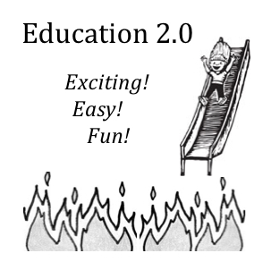

Some readers may remember this blog post. Here's an update from today's Age/SMH column.IN 2010 the energetic and forward-looking (then) secretary of Victoria's Education Department invited me to discuss educational innovation and Web 2.0 with senior departmental managers.
We spoke about the worlds of activity for students opening up from the free resources burgeoning on the web - such as doing historical research while they correct text errors from Australia's historical newspapers on Australia's National Library newspaper digitisation website. Or mashing up details of their local environment on Google Maps. Or helping optimise the school timetable with open-source tool FET.
But that's just kids' stuff. The web and social media can take students to the forefront of science. They can classify distant objects on NASA's Galaxy Zoo. Or play Foldit, a dangerously addictive computer game that you win by finding the cleverest ways to fold toy proteins on the screen. Competitors on Foldit have already helped uncover the structure of an AIDS-causing monkey virus and more besides.
Despite this explosion of possibilities, as my children have gone through school I've been amazed at how, if you strip off the various genuflections to political correctness, so much of the curriculum is unchanged from the one I completed decades ago.
Shouldn't we be using such things as spreadsheets not just as occasional tools for computation but like blackboards - as a ubiquitous pedagogical vehicle for students to visualise the maths they're learning. Wouldn't stats and data science be more useful than, say, trigonometry? Shouldn't students get some familiarity with computer languages at least as electives within maths or languages curriculums? After all, building unambiguous instructions to a computer to execute complex tasks is as demanding, as rewarding and enlightening as learning French or Chinese.
I remember the shared enthusiasm around the table. And I remember saying something like this: ''Some upskilling and recruiting of specific teaching skills is necessary. But access students' skills. Rather than discouraging the best and brightest students with group work in which the more opportunistic students prey upon their enthusiasm, find ways to make the space and give the credit necessary for students who know this stuff already to mentor others - not least by reverse-mentoring teachers.''
It seemed like a good idea, but how to make it happen? I suggested it should start small and grow. A few months later the departmental secretary invited me to attend Listen2Learners, which celebrated students' achievements in Web 2.0 projects. There I met Ben, a year 8 student who had built a simple iPhone app to help hone his older brother's mental arithmetic skills. After asking Ben how he found year 9 maths (Boring! We keep doing the same stuff), I asked how he would like to teach other students how to write iPhone apps (Awesome!). Then I told him to wait right there. I introduced Ben to the departmental secretary, who called his innovation officer over and emphasised: ''Let's start on this tomorrow!''
At the beginning of the next year I emailed Ben and asked him what had happened. I still have his reply: ''Nothing really went anywhere with my school, didn't really surprise me.''
Today the secretary and his innovation officer have moved on. So has Ben.
I didn't write this column to suggest that nothing's happening, or to belittle theirs or anyone else's efforts. But it does underline how heavy the tyranny of existing routines can be. My guess is that most people in the system liked the idea, but there were no specific programs or routines that could be ''pegs'' on which to hang Ben's mentoring other students. Which rooms would he use? Whose class would he miss?
Innovation is almost invariably fragile in existing institutions. Of course it takes leadership from the top, rather than slogans. But even then Ben's story shows us that innovation cannot thrive unless there are enough people within the system prepared to endure discomfort of varying existing routines, with the courage to experiment and risk failure and the perseverance to learn from mistakes even while the opposition of the day and the media will be waiting to pounce on any slip.
But don't fear for Ben. He left high school last year for home schooling. He will have a double degree from the Open University of Australia in IT and business by mid-next year. (He would have been midway through year 11.) Then he'll be taking on the world. So at the macro level our education system was pluralistic enough to work, even though other school students missed out on what Ben had to offer them.
Still, the web is barely two decades old. I'm optimistic that it won't be too long before our schools gorge themselves more fully on the embarrassment of riches that lies before them in the vast and ever growing expanses of cyberspace.
Nicholas Fear not the revolution is on its way here: http://www.ted.com/talks/daphne_koller_what_we_re_learning_from_online_education.html It really does look like the start of a fundamental shift in what universities are all about and one that is likely to put inferior providers under enormous pressure because of the global reach of the best products. The paradox of personalised, mass provision of top quality education (currently all for free) looks to be truly transformational given this service has only been around for a relatively short time. And the ability effectively to capture huge amounts of data to drive better learning techniques is also a powerful driver of fact-based approaches to teaching. If universities why not schools etc?
This may be the information age, but students, as I do, have to cope with the challenge of information overload. Secondly, I would contend that any person who lives school without a sense of their own potential capacities and talents has profoundly shortchanged, as has the society at large. We should all appreciate unity in diversity - or should that be diversity in unity? Thirdly, we should have an economy geared to human needs, which would address one of the major disconnections between the purposes and institutions of school and the real world. Fourthly, we should at least question the appropriateness of the model, or paradigm, of industrial factory production for what may well be a post-industrial society, with the overriding principle value of, and necessity for, global ecological sustainability. Fifthly, we consider how adopting the principles and practice of nonviolence has the ability to profoundly change our fundamental understanding of the world and the people in it.
Yea love it! Kumbaya!
+1 for this. Our teaching of the world of maths and data is wildly skewed towards a small group of concepts that have been taught for decades. Set theory gets left behind after primary school, even though it is the fundamental building block of the relational databases which underpin much of modern life. Statistics is left to universities, even though it's essential to understanding everything from politics to quality control. They seem to teach arrays a bit more today than in my schooldays. But why not go the whole hog and teach programming, which is kind of thrilling - plus you get real programs out of it!
See also "Is Algebra Really Necessary"
Lawrence Summers is signed up too: "In an earlier era, when many people were involved in surveying land, it made sense to require that almost every student entering a top college know something of trigonometry. Today, a basic grounding in probability statistics and decision analysis makes far more sense."
As someone with some experience and, I daresay, skill in interpreting datasets, I'd much prefer that this knowledge was confined to a small, sought-after cadre. Heh.
Of course it takes leadership from the top, rather than slogans.
It takes more than leadership, it takes teachers to implement ideas. It is the great paradox of my time in the profession; education and ideas just don't go (not very well anyway).
Last night I was speaking to our daughter about how the education system that will test her skills is not that different to the one that tested mine or Ken's. This is despite, as you say, the massive changes in the way we source and create information.
I hesitate to, but will say, that by and large teachers are a conservative lot who do not leap very often. Perhaps it is lack of time, I think it is lack of inclination.
It is depressing given that so many kids are dying to explore. Sure they inexpertly criticise everything, but still, they love the new and they get absolutely excited and motivated when their natural inclinations are taken up, valued, and extended.
Totally agree Jenny
The teaching profession needs to be restored/elevated from where it sits in the hearts and minds of society right now. To me, this will not come without a lot of necessary reform and pain to many in the profession now, particularly those you allude to above and the unions that will stifle any serious reform without their 30 pieces of silver.
Great article and observations Nick, well done
Nick,
very articulate story, but I am inclined to agree jenny McCulloch that key into this is the quality of teachers and key to that is how much you pay them. Smarter teachers are both more inclined and more able to adapt and innovate. Dumber ones will teach what the ministry forces them to teach and lazily stick to the rules as they are.
We have talked about the underlying incentives facing education planners before: they cant entice new generations of teachers with higher pay without giving higher pay also to current teachers for whom the current wage was enough to lure them in. So forget about fast reform to the whole sector. Special schools and programs within schools involving the best teachers who get a bonus are probably the way this is going to fan out.
I also wouldn't dismiss the very real issue that most parents quite like the idea of their kids learning what they themselves learned and are not inclined to complain about it. You are the exception, not the rule.
Did I just hear you say, "give credit for achievement" somewhere not far from "best and brightest" ?
Mmmmm, dangerous words my friend. Look me up when you need somewhere to hide.
Yes, thanks for pointing out set theory.
"education and ideas just don’t go (not very well anyway)." Amen to that. It's also true at Unis. I'm always amazed at how many rules there are at universities - lots of them NOT driven by what used to be called "the Stalinists at DEET". Just academics getting together, having committee meetings and making up rules. One of the many reasons I stay away from academia.
"Dumber ones will teach what the ministry forces them to teach and lazily stick to the rules as they are."
At least for the core stuff, this is what you want -- and this is why there isn't thrilling amounts of variance in teachers. It's worthwhile noting here that even really smart teachers won't necessarily know the best way to teach something or what to teach as developing ideas like this takes oodles of time and is why you have groups of people dedicated to doing it and making good text books.
I take your comment as a reflection on my mind. OK , so I was taking a different approach to Nicholas. What I said was not wholly original I have references. Consider some problems, that include the new technology, such bullying and the medication of hyperactive children who might be suited to another environment with more physical activity, such as dance. Consider the division between academic and the rest, some of whom don't want to be there and their teachers give up on them, giving them the sense that they are not full and valuable human beings. With that sort of systematic alienation all sorts of bad things follow. Teaching is not always an easy job but a conducive environment to "cultivate deeper modes of knowing".
I will take as a basic premise that flexibility of mind and the ability and willingness to learn is vital to being a competent teacher.
There are many impediments to this and one of them is the Taxation Department.
The tax system is not geared to encouraging flexibility of mind in teachers. In order to claim student expenses, teachers must be studying in precisely the area they are teaching. So if you do a Masters in Linguistics and teach English all is well. And presumably a PHD flowing from that would be deductible as well. If however, you study law and teach English or SOSE, that is not deductible, despite the fact that the process of learning such a subject provides techniques and knowledge that are useful in the classroom on a daily basis.
It seems even more ridiculous when the tax department would allow a claim for every two bit, block headed 'professional development frolic' that opportunistic and idealistic education boffins can dream up.
Yes it is a personal gripe. If I had more time I'd take it on.
Teachers should be compensated for indeed encouraged to take up degrees within and without their subject areas.
Ditch trig in favour of stats? The opinion of an economist. No engineer would agree. Stats are for talk and administration. Trig is for actually doing something. Engineers also need stats—for example, errors are usually Gaussian—but the stats meant here are the data-mining kind.
It's not just that trig is useful. The two approaches are fundamentally different. The first thing is that the statistician is typically a hypocrite. "Correlation is not cause," the novice statistician is told emphatically in an early lesson. It is a mantra, perhaps because so often violated. People involved in statistics don't admit to it but they are always assuming correlation is cause.
Take Lawrence Summers's statement: “In an earlier era, when many people were involved in surveying land, it made sense to require that almost every student entering a top college know something of trigonometry."
With that sort of ignorance of the real world, let us hope this Summers fellow is never in a position of any real influence. I expect he's an economist. Just the sort who would assume statistics are causal. Just the sort who would look at some stats and come out with something really dopey like, say, women are no good at science.
The second thing is that those who use statistics think they will lead to understanding. Economists join the psychologists, sociologists and political scientists in running around doing surveys and experiments and evaluating them statistically. This has been in high gear since computers became widely available nearly two generations ago. It has brought no understanding and yet people want to do more of it.
Imagine if engineers took this statistics approach. They want to know about landslides. Instead of using a theoretical model developed from Galileo's perfect sphere rolling friction-free on a perfect plane, they go and look at landslides and evaluate them statistically. They measure the slope of the hill, the amount of rain, the sliminess of the soil, the size and kind of trees and other vegetation, the size of the rocks, their density, hardness, colour… whatever they imagine might be relevant. They put it all into the computer and evaluate it statistically. Farcical? This is the universal approach of social science. Consider: one result of this abdication of theoretical modelling in favour of a universal statistics model would be that they would quite likely find that heavier rocks fall faster. And they will never, ever, discover the theory of gravity.
It's not that stats are not useful. They have been essential for administration since before the time of Herod. It's just that they are a bureaucratic tool and they don't lead to understanding. It seems to me that the delusion that they do is, at bottom, a delusion that correlation is cause.
Thanks Mike,
You make an interesting point. I'm not wedded to getting rid of trig. I'm simply trying to reallocate some resources within it. There are plenty of elements of maths that have the quality you are praising about trig. And I'm not saying stats is some super maths discourse - just one of them - and one that's increasingly ubiquitous and also useful. Do you think that every existing element of the maths curriculum is a higher priority than stats or data science?
I know my last comment was a little dysfunctional, but I want to make clear that I am prepared to argue at length and in detail in response to what is, in my opinion, a lazy and superficial generalization, because I think the issue of education is of profound importance.
There are plenty of engineers out there using statistics. You can pretty much write off all attempts at quality management without statistics. Arguably, you could say that engineers are working in an administrative capacity when they do quality assurance, but never the less someone has to do it. With the rise of cheap unskilled Asian factory labour, I would argue that being able to quickly and effectively test the quality of imports is set to be one area of great engineering and scientific growth in our country.
Also, load monitoring of everything: data networks, power grids, air conditioning, water storage, etc. all depends on statistics.
That said, trig also has its uses, and the fundamental idea of designing the One Perfect Curriculum to teach all people, is a bloody stupid idea in the first place. Let them learn what they are interested in, diversity is a good thing. Bring back liberty, it was useful.
"Do you think that every existing element of the maths curriculum is a higher priority than stats or data science?"
I guess not but I don't know. What do you mean by data science? What moves me is that a lot of "data science" is not science and since this is far from widely understood, I am not impressed with the idea of replacing something valuable with what must be the greatest bullshit producer in academe.
Google can predict flu outbreaks based on searches for flu; the effectiveness of a new drug is statistically determined; the Higgs boson is detected by statistical occurrences. Call them "data science"—fine. In each case there was a theory motivating the statistical comparisons.
But most statistics in the social "sciences" consist of fishing expeditions: never mind theory; let's see what is correlated with what. It gets called science but it's not science in any meaningful sense. Plenty of people, including such luminaries as Kurt Lewin and Friedrich von Hayek, said it wouldn't work and will not lead to understanding. Yet it keeps gaining ground. Universities round the world invest fabulous resources in this in psychology, sociology, political science and economics. Academic empires are constructed from it. It has produced nothing and it never will.
I don't know anything about school curriculums. I suppose all the branches of maths would be needed for tertiary study. But if education is preparation for life (rather than academe), then engineers will surely always need trig.
If one kind of maths had to go, maybe it should be differential calculus. Once upon a time you had to use calculus to assess the effect of errors—the effect of a deviation in the values in a mathematical function. But it seems to me that with the advent of programmable calculators in the 1970s this became superfluous because all you need to do is program the function and then run the program a few times making plausible alterations to the input parameters to see what difference it makes. It is a more explicit and practical process than differentiation. Do practising economists use calculus?
I think the mentoring idea is very good—breaks up the rigid age cohorts, teaches responsibility and ought to lighten teacher load. I expect it has been patchily applied for millennia. Many years ago I interviewed the principal of a boys' school who had such a mentoring program going. I recall his saying that older boys were punished more heavily for transgressions because there were expected to be setting an example to the younger ones. Sad coda was that the man was later fired for having pornography on the school computer. Everyone—the whole city—knew about it, so all his talk of setting an example was wiped out in an instant.
You miss my point, Tel. A lot of things need stats and quality control is one of them. Statistics means a lot of things and that is not what I am crooked at. So maybe read my comment again.
Your liberty ideology is vacuous: school is compulsory and though what students are interested in may be taken into account, by and large the curriculum is chosen by experts and imposed.
School is made compulsory because the power of the state decrees laws that make it compulsory. We have a choice about that you know. We also have choices about how we go about structuring things, how much individual digression on the part of the teachers, and the parents and the students themselves can be tolerated.
I argue that your "chosen by experts" ideology is vacuous.
Get rid of calculus? No, you can't do that to Newton... sacrosanct!
Most of mechanical engineering uses differential equations in some way or other, plus a good fraction of electrical engineering (pretty much any sort of transient analysis). I don't think it's even worth trying to teach modern Physics to people who don't understand calculus. You could rejig a lot of it to use integral calculus in preference to differential calculus but is there any great advantage? I mean one is the mirror image of the other, integral calculus is better suited to numerical solutions, and differential calculus is usually easier to handle analytically.
By the way, yes some economists use differential equations to model market dynamics. Read Steve Keen's papers, he argues that he was trying to bring himself up to engineering best practice when he started down that track. Also, some of the people calling themselves "Post Keynesian" are into differential equations and market dynamics... which could easily enough be a load of cobblers, but I'm talking about economists here.
"But it seems to me that with the advent of programmable calculators in the 1970s"
Ugh, and you wonder why students can't do simple things anymore. Rather than think of what specific things you want students to know at the end (which is worthwhile), you should also think about what different mental skills you want them to learn. This is obviously more important in earlier years than latter ones. Graphical calculators, for example, seem to have caused the death of skills required to do visual-spatial processing.
Hi Nicholas, I work in the Educational Publishing sector and we are of course in the middle of the huge digital shift in Education, assisting and publishing toward these needs. We are actually creating products which allow all this flexibility and contain much of it so very interested in all the possibilities you suggest. I am in the Higher Ed sector but have a daughter who is in Year 7 this year at a Catholic School in Sydney - Marist Sisters College Woolwich. I am amazed by their innovative integration of technology - streets ahead in every way. Talk to them!
Having worked in biomedical engineering (mostly computational modelling of mech-eng problems) for nine years before moving into statistics, I think you're being overly harsh on the latter and perhaps a little rosy-tinted on the former.
Stats doesn't in itself tell you why a correlation exists, but simply noticing the existence of such a correlation can be the starting point for valuable further work. For example, early Australian censuses showed a spike in rates of deaf-mutism for people born around 1898-99, coinciding with a rubella epidemic; this correlation sparked further research that confirmed a relationship between the two.
(And as somebody working in stats for a living, I assure you that I spend a lot of time fussing about whether my correlations are causal, because very often they're not.)
I absolutely agree, in a world which is going to be increasingly occupied by programs, how can anyone conceive of a curriculum without programming?
I find it very upsetting and I find that it is quite a challenge to homeschool programming when your children already go to school and you aren't any good at it yourself.
They seem to spend plenty of time learning to be vacuous consumers of computing content, why not learn to create it??
There are numerous online free programming education tools and the kids can surely teach themselves with the teacher mainly there to keep them focused and prompt them to ask for help when they need it, surely??
Patrick, I agree with you that programming should be included in a high-school curriculum, but not necessarily for the reason you state. While it'd be great if we could all program computers, I think there are other, more important skills for the average Joe to have. There's far more things we'd like to be able to teach people than there is room in the curriculum. For instance, we live in a legal system where "ignorance of the law is no excuse" and yet we teach basically nothing about the law in compulsory education. There are also constant calls for people to work in teams, to be tolerant and supportive of others, but there's barely a pinch of psychology covered. We expect people to be interested in politics but teach them little about political philosophy, leaving them to choose between team big-heart-workers and team tough-love-business.
I see programming as important in the same way I see mathematics as important; in that it facilitates the development of important cognitive skills. I don't expect people to be calculating an integral or standard deviation in their every day lives. However I do think it's useful to have a general understanding of the relationship between the current state of something and the way it's changing, or the relationship between the detail in the data and the way statistics summarises it. Similarly I think programming would teach important skills in understanding processes and being able to communicate them in an unambiguous manner, or to be able to understand the relationship between a component and the whole system. In a world that is not just increasingly technologically complex, but also increasingly bureaucratically complex I think these skills would be broadly useful.
Geoffrey, that's great. I should expect that nearly every theory ever thought up stemmed to some extent from someone noticing something and pondering on connections. You notice something and look to see if there is a connection. But you are biomedical. You are in real science. The "something" is out there. In the social "sciences" nothing actually exists.
Rubella exists. Deafness exists. They exist whether you perceive them or not. Unless you are Bishop Berkeley these things are independent of human perception or reflection. So if you notice some correlation you can actually investigate to see if there is a causal path, looking at constituent real things like germs and chemical reactions. So you arrive at understanding.
By contrast the "things" the social scientists see are not real in the same way. They don't have an existence outside of human perception. They are just not there unless people say they are there. So when you get a correlation between A and B and you would look for a reason, it falls down because there is no agreement about A and B - maybe even whether they exist at all. Schools of thought develop and, depending on the power of the promoters, get followings and set up mutually congratulatory publishing circles.
In the real sciences you can investigate whether a correlation is causal but in social science, how will you do that? You have no objectively existing germs or chemical reactions to investigate with. So all you get is the correlations, never real understanding. There must be tens of thousands of highly educated social scientists spending their careers pressing the SPSS buttons at a cost of billions, all to no effect.
Also: I might be wrong but I suspect that whoever it was that noticed the correlation between deafness and rubella had a suspicion, had an idea, sufficient to want to look in the first place. I suspect that that person had his or her head deeply in the subject, knew something about germs and chemical reactions (or whatever) and so looked with eyes steeped in theory. Except to some extent in economics, this is missing in the social sciences.
Ah you Luddite, Conrad! I have been told that programmable calculators are not permitted in schools. That's terrible. That's a real failure of the teaching imagination. If you have some technical aid that makes an activity out of date then surely the appropriate teaching response is to up the ante. Assume they are entering the exam room with every conceivable program set up in their machines and set the exam paper on that basis. It will not be one whit easier to succeed as a student and the successful ones will be far more knowledgeable than those of former plodding times who were expected to memorise formulae (or whatever outdated activity it was).
I think you are talking about academics. I find it hard to believe any engineers on the job use calculus. I'd say they forgot how to do it the day after they left uni. But they, and mechanical draftsmen and the like, know their formulae and can readily program them and examine the effect of variations in the values of the parameters. Apart from the fact that the practitioner will have no confidence in the differentiation (which looks like trickery) it does not give the "feel" which running variations does.
Depends on the engineer. When I was in biomed, I still had occasion to do pen-and-paper calculus now and then - I recall using Fourier decomposition to tackle a gas-diffusion problem, and deconvolution to sharpen up data from a laggy measurement probe.
NB: I was in biomedical, but I later changed careers and I've spent the last five years working in official statistics (social and economic, plus a chunk of operations research).
You are correct in saying that the concepts of social science are often fuzzy and poorly-defined, compared to those of the hard sciences. My response to that is not to denigrate social scientists for those things, but to acknowledge that they've taken on a difficult field that simply doesn't admit of the same type of rigour that might be achieved in the 'hard' sciences. A human is a much more complex entity than an atom; the emergent properties of a group of humans are more complex than that.
I'll grant that this fuzziness does attract some fuzzy thinkers who produce nothing of value (though in counterpoint, the simplicity of hard sciences attracts some inflexible types who are uncomfortable dealing with anything that isn't cut-and-dried.)
But in amongst the chaff, there is solid and valuable science in there. Take Milgram's work on the psychology of obedience, for instance - when he shows that an ordinary good-natured person can quite reliably be induced to hurt and kill another human in a certain social setting, it seems foolish to write that off as "not real". The state of mind he examines might be as intangible as gravity, and less easily quantified, but its consequences are visible and important.
"Ah you Luddite, Conrad!"
That's unfair Mike. You're the one arguing we should be teaching things like calculus, which is useless to most of the population. If you want to teach people useless things, the least you can do is specify what they learn from it.
You can look at the flipside too. We could give 7 year olds calculators, and they'd never need learn things like time-tables again. But we don't. Are we just being nasty?
There's also a good quote from Stephen Hawkings somewhere where he notes that the reason he thinks he became so good at physics was because he couldn't draw all the graphs of functions like most people, so he had to imagine everything instead, and he basically became the master at this.
Aside from anecdotes, one of the big questions about maths is why everyone seems to be getting worse at it (and especially the right end of the tail that you really want). That can't be simply teacher quality because it's occurred across many countries. So if it isn't that, then the most obvious reason is what we're teaching kids and how. Interestingly, this decline comes with the advent of none other than graphical calculators (late 80s) and computers that allowed kids to skip learning how to do difficult tasks which involve imagining visual information in many cases.
Correlation or causation? These are the sorts of things you need to worry about when you think of things kids should learn, and if changing what you teaching them means that they don't learn some of these building blocks that are important for more complex things, you're basically cursing them
In the hard sciences the line between subject and object is clear and sharp, for the sciences that study ourselves the line between subject and object is often a lost edge. Anything involving awareness of awareness is almost certainly subject to some sort of Gödelian limiter.
Desipis I think we agree on nearly everything. I see school as teaching kids how to interact with their world and interpret it. Maths is obviously a big part of that. History, too. In the contemporary world I would say that understanding the logic and methods of programming is also part of that. It’s like teaching woodwork to farm-hands 250 years ago. I am also a big believer in Nick’s theory of letting the kids teach themselves. I think that as much of education as possible, progressively introduced over primary school, should be in the form of self-directed online lessons where the teacher’s main role is to monitor progress and to teach the kids how to teach themselves: strategies for overcoming roadblocks, how to constructively seek and provide assistance to classmates, etc. That too I would say would be teaching how to interact with the contemporary world.
Thanks, Geoffrey. Consider Milgram. Quite a while ago now. If you think social science has produced a lot of things like that, you'd be wrong. Milgram's electric shocks, along with Zimbardo's prison experiment, are social science experiments that have come to public notice but that's about it. It's been a drought since the early 1970s. And where did these experiments lead? To endless literature and no causal understanding.
Still, these experiments (which, note, have zero dependence on statistics) are touchstones. They tell us human nature is bad in some circumstances. Let's hope that they are indeed important but it isn't clear how. Perhaps they provide enduring lessons about the dangers of authority situations, lessons which somehow all the wars of history and German behaviour during WW2 didn't quite drive home. But that's not science.
Observers have noted that only some people shocked victims to death while others refused. Corresponding variations in behaviour were observed in the death camps. We will have science when THAT is explained. Similar applies to the game theory experimentation that has been in vogue for the last 20 or 30 years: some people are "rational" and some are not; some are greedy, some are generous. It is not that a person is one thing today and another tomorrow; people are consistent; people come in types.
The types will never be identified by statistics. It has been tried. This is where statistics goes off the rails. The survey-taking and associated statistical massaging on "personality" research has been enormous. It remains a major branch of psychology. It has achieved nothing (and is of no use to game theorists either). Though there are several personality schemes, none proves the others are false. Do the schemes offer lists of famous persons (real or fictional) who exemplify the various alleged personality types? Nothing, not a sausage. As far as I know, no one has any theory of personality whatsoever. It seems there isn't even any biological or evolutionary reasoning that there should be such a thing as personality. Hundreds of thousands of people have been tested looking for this phantom.
Even if Milgram is a grain among the chaff, it is almost alone.
"A human is a much more complex entity than an atom; the emergent properties of a group of humans are more complex than that."
Sure. More complex than autumn leaves, I'm sure you would agree. So what on earth are the social scientists doing with their statistical surveys? What madman would try to understand aerodynamics by analysing statistics on how autumn leaves blow in in the wind?
Another thing, Geoffrey—
"You are correct in saying that the concepts of social science are often fuzzy and poorly-defined, compared to those of the hard sciences."
Well no, I didn't say that. Fuzzy definitions are not the problem. You mention gravity: no one can define it. Science does not define things. People define things and people disagree with each other; science is blithely unaffected. That would be because it is really "out there" independent of human perception. Consider Newton's second law, F=ma. There is no agreed definition of mass. There just isn't. And acceleration depends on time which no one has any idea how to go about defining. The very foundation stones of the mighty scientific pyramid are undefined. The idea that the problem with social science is that it lacks clear definitions is simply wrong. (Do not think that F=ma is a definition of F. That won't work for the "definition" of m is m=F/a.)
I am sure you can come up with definitions of germ, rubella, deafness, etc. So too, can the social scientist come up with definitions of society, competition, dollar. The difference is that your things really exist and your science does not depend on those definitions; you know what they are whether or not you can define them. The social scientist, however, is entirely dependent upon definitions (maybe even the momentary definitions in a particular paper) of the alleged objects of study. We are more than a century down this track and it doesn't work. It goes nowhere.
Science isn't about definitions; it is about relationships between two or more (undefined) things. If social science is to be proper science it has to express relationships between objects, objects that no one particularly needs to define.
I don't know if "line" and "lost edge" mean anything or what the significance would be if they do. I think the quote is psychobabble. "Isomorphism is another name for coding." Oh yes.
'Line' refers to a clearly drawn boundary , lost edge refers to a boundary that is very fuzzy.
As for babble , as you like, though I have not heard Hofstadter's thoughts called babble before.
"relationships between two or more (undefined) things" is what "definitions" are made of.
No John, not generally. If the definition of "definition" were are relationship the word would be superfluous. As pointed out above, F=ma does not meaningfully define F because the only "definition" of m is F/a. The relationship is unambiguous but as definitions there is no information.
A definition—as I use the word and as I think most would use it—says what something is. Thus it does not normally express a relation. A definition consists of words and each word also has to be defined so a definition is an infinite regress (useless for science).
What Godel established was that even in the citadel of mathematics there lurked relational reference. In other words, Russell and Whitehead's Principia Mathematica was doomed to incompleteness. Any system of representation that is sophisticated enough to make statements about itself (that certainly covers human representation) is necessarily incomplete. Definitions are intrinsically relational; and by that I do not mean some sort of cultural relativism.